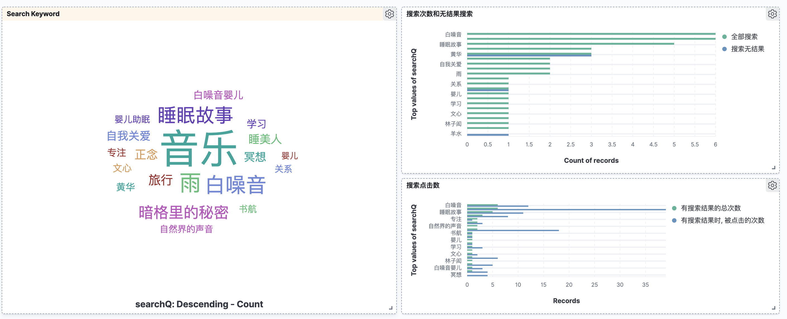
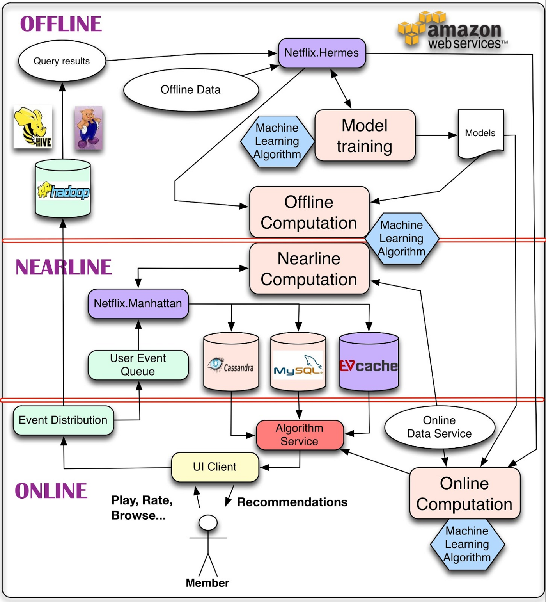
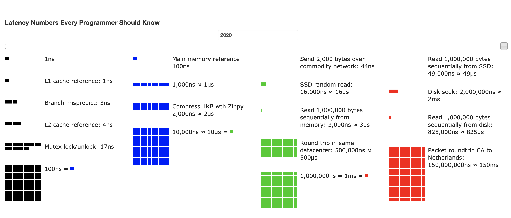
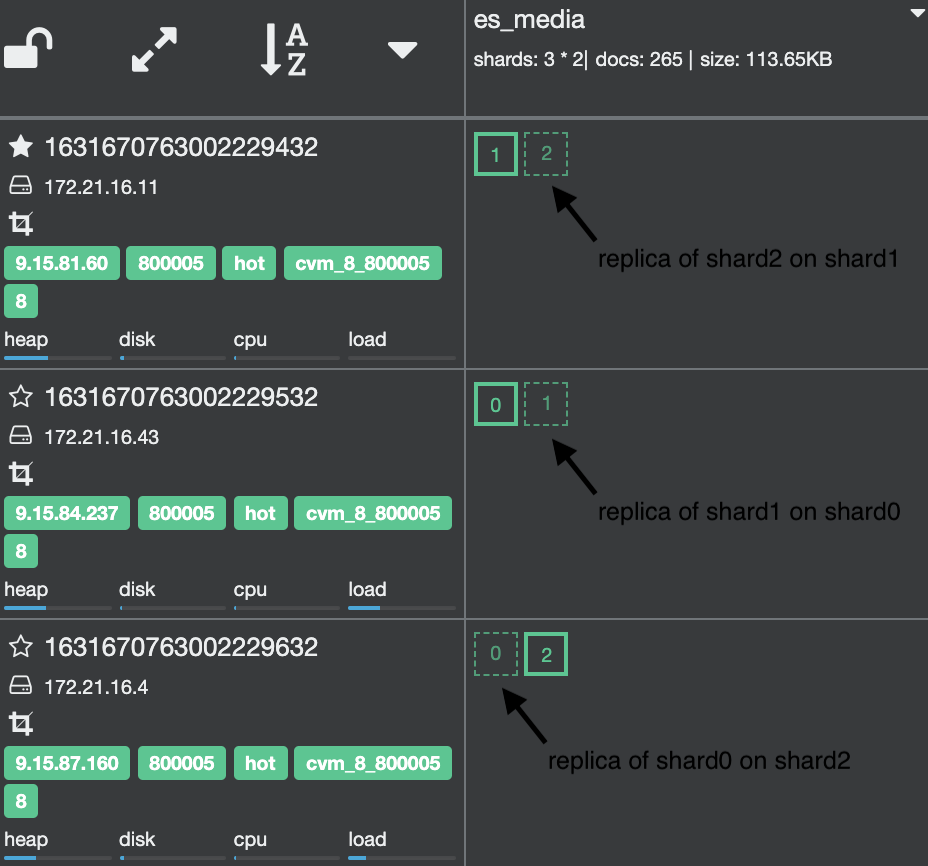

检索技术探索
方案设计
可选的搜索方案
| 方案 | 优点 | 缺点 | 扩展性 | 难度 | 实现方式 |
|---|---|---|---|---|---|
| MySQL | 接入成本小， 原生的 MySQL 支持简单的全文索引 和 ngram 分词 | 功能有限， 不支持复杂的分词逻辑， 不支持预先设置字段权重 | ⭐️ | ⭐️ | 直接接入并使用 MyBatisPlus 进行查询即可 |
| 内存(H2) | 速度快，可使用 H2 和 Lucene 结合进行检索， 当前数据量大概为 500K， 可考虑全部导入 | 数据量变大之后容易导致 OOM， 需要处理多实例的数据同步问题 | ⭐️⭐️ | ⭐️⭐️⭐️ | 1. 接入 H2 2. 提供同步更新机制 3. OOM 优化 4. 分词优化方案和调试方案 |
| ES | 主流， 满足基本的搜索需求， 丰富的 API， 分词功能支持较好 | 引入第三方组件， 容易造成单点， 服务可靠性无法保证 | ⭐️⭐️⭐️⭐️⭐️ | ⭐️⭐️ | 1. 接入 ES 2. 实现 ES Wrapper 3. 提供统一的搜索接口 |
例子
MySQL
给 media 表的 content 字段 添加全文索引， 这里使用了 ngram 作为分词器
分词的字数由 ngram_token_size 参数进行控制
ALTER TABLE `media` ADD FULLTEXT(`content`) WITH PARSER ngram
select id， content from media where id in (230， 231)\G
*************************** 1. row ***************************
id: 230
content: {"description":"【为什么失眠】\n\n\n【专注练习】\n 为了避免大脑走神，"}
*************************** 2. row ***************************
id: 231
content: {"description":"描述文案"，"title":"播放器标题"}
查看匹配的分数， 这里拿了两个 id 作为例子
select id，match (content) AGAINST ('为什么失眠') as score from media where id in (230， 231)
+-----+--------------------+
| id | score |
+-----+--------------------+
| 230 | 4.3379950523376465 |
| 231 | 0 |
+-----+--------------------+
2 rows in set (0.05 sec)
mysql> select id，match (content) AGAINST ('失眠') as score from media where id in (230， 231);
+-----+-------------------+
| id | score |
+-----+-------------------+
| 230 | 8.675990104675293 |
| 231 | 0 |
+-----+-------------------+
mysql> select id，match (content) AGAINST ('眠') as score from media where id in (230， 231);
+-----+-------+
| id | score |
+-----+-------+
| 230 | 0 |
| 231 | 0 |
+-----+-------+
2 rows in set (0.04 sec)
H2
例子见 H2 的全文检索功能
H2 可以结合 Lucene 一起进行使用， 但是从 API 的设计和扩展性来说，都有比较大的限制，可以作为测试使用，不适合用在生产环境中
ES
ES 作为专业的搜索引擎，有丰富的功能和 API，在之前我们便使用了 ELK 做日志相关的收集和查询， 在稳定性和查询速度上面都要对应的保证。
相比于 MySQL，ES 提供更细粒度的相关度控制(Relevance Tuning)， 即可以指定每个字段的搜索权重，例子
curl -X GET 'https://es/search' -H 'Content-Type: application/json' \
-d '{
"search_fields": {
"title": {
"weight": 10
},
"description": {
"weight": 1
},
"states": {
"weight": 2
}
},
"query": "mountains"
}'
对比于 MySQL， 更提供了全套的管理后台，可在 Kibana 进行对应的索引管理和监控等操作
另外，除了 weight/boost 设置之外， ES 还支持前缀匹配，同义词检索，分词插件等功能，其中 同义词，分词插件 可直接在腾讯云后台中更新
落地方案
搜索
热词检索/TopK 等]); es([es 检索]); E([返回搜索结果]); E1([返回推荐数据]); onMemeroy-->|有结果| E onMemeroy-->|无结果| es es-->|有结果| E es-->|无结果| E1
索引
采用 ES 作为主要的搜索引擎， 通过事件维护索引的更新
ES-主查询引擎); storage2(存储2
内存-热词,TopK 等信息); end subgraph 源数据事件 event1(单曲/合集/QE/DE 更新); event2(老师更新); event3(标签更新); end subgraph 宽表 Schema field(索引字段); weight(搜索权重值); end event1 & event2 & field & weight-->EventHandler-->storage1 & storage2; cache-->storage1; es-->storage2;
部署
- 如果采用 H2 作为搜索引擎， 为了服务的简单行来说，需要考虑 新建项目， 而且需要维护好数据更新的问题
- 如果使用 ES 或者 MySQL 作为搜索引擎， 则可不需要考虑单独起项目，在原有项目上开发即可
- 无论使用哪一种方案，都需要将搜索服务部署到单独的服务器中，通过 Nginx 的二级域名进行流量转发和分流处理， 该部分在 Nginx 层控制即可
任务分析
-
热词维护
后台配置，存储 MySQL，使用 guava cache，全量缓存 热词对应的id 至 内存中
-
索引维护
- 确定可供搜索的字段来源
- 字段更新之后，需要发送对应的事件，使得 ES 进行索引的更新
-
搜索
- 优先匹配 热词， 该部分直接从缓存中获取
-
热词中不存在时， 则使用 ES 进行查询
QueryBuilders.multiMatchQuery("搜索词").fields(Map.of("词汇1", 1f， "词汇2", 2f));
-
冷启动数据
未获取到搜索结果时处理如下:
- 如果是搜索 es 未找到对应的数据结果， 则使用 人工配置的 推荐数据
-
搜索词数据统计
logstash 收集搜索相关的词， 下面的
searchQ为搜索的词汇filter { grok { match => { "message" => ['%{TIMESTAMP_ISO8601:reqTime} %{GREEDYDATA} params =[{"q":%{searchQ}}] %{GREEDYDATA}time cost = %{NUMBER:reqCostMs} ms'] } } mutate { convert => { "reqCostMs" => "integer" } } date { match => [ "reqTime"， "ISO8601"， "YYYY-MM-dd HH:mm:ss"， "YYYY-MM-dd HH:mm:ss.ZZZ" ] target => "reqTime" locale => "en" } } -
数据全量索引
-
数据统计
对于数据而言，常见的是 哪些词被经常搜索？搜索的结果的相关度怎么样？搜索的结果有多少人进行了点击？(CTR 是多少)

-
其他的优化
- 分词优化，考虑使用不同的分词引擎(如 ik， ngram 等)
- 同义词优化，配置对应的同义词进行检索优化
- 拼音，错别字纠正
- 搜索词补全
演进计划
亿/千万]) input2([原始数据2
亿/千万]) input3([原始数据...
亿/千万]) callback(召回
万/千); sort(归并排序
千/百); filter(调整
百/十); output([结果
十]) input1 & input2 & input3-->callback-->sort-->filter-->output

更多内容见 推荐系统探索
检索基础理论
需要关注下面几点
- 快速的缩小检索范围
- 二分查找法， 缩小一半
- 跳表， 跳动步长 > 1
- B/B+树， 以磁盘片为步长，一次过滤掉一个(4K)或者多个快
- 位图/Hash/布隆过滤器， 利用概率/数组下标 快速寻找或者判断元素
- Roaring Bitmap， 高位存储 bucket 信息，低位存储位图信息
- TopK & 非精准 TopK
- 利用存储、访问特性进行检索优化， 估算内存和磁盘的空间占比， 减少磁盘IO(磁盘)， 利用磁盘的顺序读， 避免随机读
- B+ 树
- 日志记录使用 LSM 树
- 空间冗余换取时间
- 跳表， 冗余步长
- AVL， 冗余叶子高度信息
- 倒排索引
- 缓存
- 热点数据使用 LRU 缓存
在工业界中，往往会几个算法组合起来进行使用，如使用跳表来实现 posting-list， 两个 posting-list 求交集的时候，直接将小的那个变成 Hash 等
另外，要注意两点
- 内存的检索效率比磁盘高许多，因此，能加载到内存中的数据，我们要尽可能加载到内存中。
- 大数据集合拆成小数据集合处理(快速缩小检索范围)

参考: 数字
更新策略
- Double Buffer， 利用冗余减少更新频率
- 全量(只读) + 增量更新(可读可写)
指导思想
- 索引和数据分离
- 减少磁盘IO
- 读写分离， 避免锁
- 分层处理 (非精准 TopK -> TopK)， 搜索降级
ES 实战
基本概念
- Document Metadata
- _index 索引名称
- _type 索引类型 7.0版本中只对应一个 type， 为 _doc
- _score 相关性打分
- _source 数据， 为 JSON 格式
- _version 更新的版本
- Mapping 字段类型定义
- Setting 部署方式定义
- Data node 存储数据的 node
- Coordinating node 分发节点， 并发将请求拆分到不同的节点进行查询
- Primary/Replica Shard 主/副本分片
- green， yellow & red 绿色代表主/副本分片均正常， 黄色代表副本分片不正常， 红色代表主分片不正常
- put 文档
DevTools
假设索引名称为 es_media
索引信息查询
# 查看 mapping 和 setting 信息
GET /es_media
# 查询总数
GET /es_media/_count
# 搜索内容 并查看分数
POST /es_media/_search
cat 查询
# 查看所有的索引信息
GET /_cat/indices
# 查看所有的分片信息
GET /_cat/shards
集群信息
GET /_cluster/health
增删查改操作
# 创建记录
POST /es_media/_doc
{
"name": "1"
}
# 更新或者创建 id=1024的记录， 该部分删除原有的索引进行重建
PUT /es_media/_doc/1024
{
"name": "1"
}
# 更新索引
POST /es_media/_update/1024
{
"doc": { "internalName": "this is new" }
}
GET /es_media/_doc/1024
# 批量操作
POST /_bulk
{}
# 批量获取操作
GET /_mget
{}
# 批量查询
GET /_msearch
{}
分词器
GET /_analyze
{
"analyzer": "standard"，
"text": ["今天是个好的日志", "我吃了一顿烧烤"]
}
GET /es_media/_analyze
{
"field": "name",
"text": ["nice"]
}
profile 和 制定字段查询
# 查询字段为 title， 并查看 profile 其中 df 代表的是 default_field
GET /es_media/_search?q=测试&df=title
{
"profile": true
}
termQuery 和 phaseQuery
# phaseQuery
GET /es_media/_search?q=title:"测试 一下"
{
"profile": true
}
# termQuery
GET /es_media/_search?q=title:"测试 一下"
{
"profile": true
}
# boolQuery， 必须要包括 测试 或者 一下
GET /es_media/_search?q=title:(测试 一下)
{
"profile": true
}
# 默认是 OR 的查询
# 制定 AND
GET /es_media/_search?q=title:(测试 AND 一下)
{
"profile": true
}
# 测试的查询方式
POST /es_media/_search?q=id:10
{
"explain": true
}
# 重建索引，将一个索引导入到另一个索引
POST _reindex
{
"source": { "index": "source_index" },
"dest": { "index": "new_index" }
}
倒排索引
正排索引
| document id | content |
|---|---|
| 1 | elasticsearch server |
| 2 | server devops good |
| 3 | elasticsearch very good |
倒排索引
| term | count | document position in content |
|---|---|---|
| elasticsearch | 2 | 1:0 3:0 |
| server | 2 | 1:1 2:0 |
| good | 2 | 2:0 3:0 |
| very | 1 | 3:1 |
- 单词词典(Term Dictionary)
- B+ 树
- Hash
- 倒排列表(Posting List)
- Doc ID
- TF (term frequency) 词频， 用于计算相关性
- Position 词出现的位置， 用于语句搜索
- Offset 位置， 用于高亮
Analyer 分词器
关键的三个部分
- Character Filters 过滤器，过滤掉一些如 < & 标签， 该部分会影响到倒排索引的 position 等信息
- Tokenizer 切分单词，比如按照空格，逗号切分 [“good better best”] 切分为 good， better， best
- Token Filter 加工单词，如删除 stopwords(a the 等)， 将大写改为小写， 删除违禁词等
GET /_analyze
{
"analyzer": "standard"，
"text": ["今天是个好的日子", "我吃了一顿烧烤", "I feel good"]
}
GET /es_media/_analyze
{
"field": "name",
"text": ["nice"]
}
常见的 Analyzer
- standard ES 的默认的分词器
- simple
- whitespace，将空格去掉
- stop 将 a，the 去掉
- keyword 不进行分词， 则使用 keyword
- pattern 正则分词
- language 不同语言的分词 (running 会变成 run，foxes 变成 fox 等)
中文分词
难点：词语在不同地方的语境不同，假如 这个瓜不大好吃 分词为了 瓜，不大，好吃，则完全跟原来的意思相反了
常用的中文分词器
注：可自定义 analyzer， 也可以定义 search_analyzer， 可参考 两者的区别，以及官方的建议
Relevance 相关性
评估标准 Information Retrieval 通过下面三个结果来看相关性的结果好坏
- Percision 精确度。除了返回精确结果，还包含了哪些非精确的结果
- Recall 查全率/召回率，还缺少了哪些数据未返回
- Ranking 排序
该部分和机器学习里面的评估标准类似，有 True/False Positive 的概念
Mapping
- Dynamic Mapping， 自动创建 Mapping 和 字段
- true 可以加字段，可以被索引
- false 可以加字段，不可以被索引
- strict 不可以加字段，不可以被索引
数组的类型依然是 text
- keyword， 精确值类型， 认为是一个不可分割的词语， 如 App Store， 其他的精确值还包括 数字，日期 等， 该部分没有必要做分词的处理
- text， 全文本类型。
Aggregation
- Bucket，类似于 MySQL 的 group
- Metric，类似于 MySQL 的 count，min，max 等等
- Pipeline
- Matrix
Term 和 Text
查询的分类可参考 Building Queries
- term 不会做分词处理，类似于 client 中的 keyword
- 注意，一些 analyzer 会做大小写转换，所以如果你的输入值为 iPHONE， 索引类型为 term， 存储到 ES 中 的 是
iphone， 此时拿 iPHONE 是无法查询到数据的 - 可以使用 constant score 将查询转化，避免计算 score，提升性能
- 可以用 es 的多字段属性，添加一个 keyword 字段
- 注意，一些 analyzer 会做大小写转换，所以如果你的输入值为 iPHONE， 索引类型为 term， 存储到 ES 中 的 是
- 全文查询， 即 text， 查询的时候，会先将 text 分成 term，再进行不同的算分
下面是一个 text: Fox Chicken Nice 被查询的例子
Fox Chicken Nice]); f([Term1
Fox]); f1([计算分数]); c([Term2
Chicken]); c1([计算分数]); n([Term3
Nice]); n1([计算分数]); e([汇总得分并排序输出]); fcn --> f & c & n f --> f1 c --> c1 n --> n1 f1 & c1 & n1 --> e
bool， 数字类型的查询
- 对于这种不需要分词的类型，可以考虑直接使用 termQuery 查询， 如果不需要计算排序，则使用 constant score 方式，转化为 filter
- 多值字段，如 labels: [label1， label2] 则为包含关系， 如果需要精确查询则需要增加 labels_count 的字段， 结合起来做精确匹配
相关度计算
TF-IDF 和 BM-25
- TF term frequency，一个词在全文中所有词中出现的次数
- StopWord 类似于 ‘的， 我’ 这样的词，计算 TF 是没有意义的
- DF document frequency， 出现过该词的文档，在总文档中的次数， 也就是说该值越大，说明该词就越常见， 值越小，就越稀缺和重要。
- IDF inverse DF
简单来说一个词的 TF 越高，DF 越低，文档越短，而认为相关度越高
Boosting， boost 的意思是放大的意思，通过这个值可以控制算分结果
- Boosting Query 在查询的时候指定字段的 weight
- Function Score Query 自定义字段/值的分数计算
Query 和 Filter
Query 会进行相关性算分，Filter 只是过滤，不进行算分，性能相对更好
- Bool Query
- must QueryContext 会算分
- should QueryContext 会算分
- must_not FilterContext 不会算分
- filter FilterContext 必须匹配，不会算分
Function Score Query
可以自定义算分结果
Serach Template
搜索的定义 和 搜索的逻辑解耦
POST _scripts/media_serach_template
{
"script": {
}
}
搜索推荐 search as you type， AutoComplete， ContextComplete
- Term Suggestion，比如你搜索 go， 自动补全为 good god 等
- Phase Suggestion， 比如搜索 I love， 自动建议 I love you， I love dog， I love cat 等等
- AutoComplete， ES 在内存中建一个 fst(finate state transducer) 进行检索，该结构类似于 tire， 对比可参考这篇文章 该部分需要提前在索引中做定义
- ContextComplete，根据上下文进行推荐
ES 分布式
- 故障转移
- 当前 shard 存放的副本，是其他的 shard 的副本
- 当前 shard 挂掉之后，其他的 shard 会自动同步副本数据

- 文档分布存储
- 路由算法 Hash(_routing) % primary_shards, 这里的 primary_shards 一旦更改，则需要重建索引
- 倒排索引是不可变的
- 好处: 不需要考虑并发，很好地利用文件系统的缓存，易于压缩
- 坏处: 重建索引的成本比较高
- 删除的索引单独存储，搜索的时候，先搜索全部，再过滤掉删除的文档
- Refresh
- 单个倒排索引为多个 segment (不可变) 多个 segments + .del = 所有的数据集合
- index buffer 为 索引的内存空间, 索引的时候会先写入 index buffer
- index buffer 写入 segment 的过程为 refresh
- 默认是 1s 进行一次 refresh，由于只有进入了 segment 才会被搜索，所以 es 是近实时的搜索引擎(延迟<=1s)
- index buffer 占用内存过多(JVM的 10%) 也会触发 refresh
- Transaction Log
- 在写入 index buffer 时候，同步地写入了 transaction log
- Transaction Log 在 ES 断电的时候，依然能够进行数据的恢复
- Flush
- refresh
- 将缓存中的 segment 落到磁盘 (fsync)
- 清空 transaction log
- 默认 30分钟 调用一次 或者 transaction log 写满(512M)时 调用
- Merge
- merge 磁盘的 segment
- 真正的删除
- Search Type
- DFS Query &/then Fetch
分片的生命周期
TODO: 增删改查的步骤是什么样的，如何使用 内存，磁盘 等来做到 高性能 和 高可用的？
分片数目 和 相关性分数的关系
深度分页, 并发更新
- 深度分页会导致非常大的性能问题，ES 默认的限制是 10000 条，可以考虑
search after或者scrollAPI 来解决深度分页问题 -
乐观锁, version = f(seq_no, primary_term) external_version
聚合查询
- metric, 如 max, mix, avg, sum 等
- bucket, 类似于 groupBy
关联查询
类似于 JOIN
- object, user 对应的 name 字段，变为 user.name 字段, 会分别进行索引
- nested, 支持多个字段在一条记录中的查找
- children, 需要将父子文档存储在同一个分片上，此时子文档在创建索引的时候，需要加上父文档的 id
重建索引
什么需要重建索引
- 索引相关的 Mapping 变更, 如 分析器，字段类型
- 主分片数变更
- 数据迁移等
相关 API
- update by query 在改变所以之前的字段, 也可以被索引到
- reindex
数据建模
考虑以下的几个维度
- 使用的字段
- 是否需要全文索引
- 是否需要进行聚合和排序
- 存储大小
字段类型
- Text(全文检索) 还是 Keyword(精确匹配, 排序, 聚合)，ES 默认会给 text 类型的字段 设置一个 keyword 字段, 平时考虑可以添加 英文/拼音 的字段，提高用户体验
- 枚举类型尽量设置为 keyword
- 不需要检索的字段设置 index 为 false
其他
- 如果确认字段和字段类型，建议索引的 dynamic 设置为 strict
- 避免正则匹配查询，而是通过字段冗余来解决(空间换时间)
- Mapping文件放入版本库中进行管理